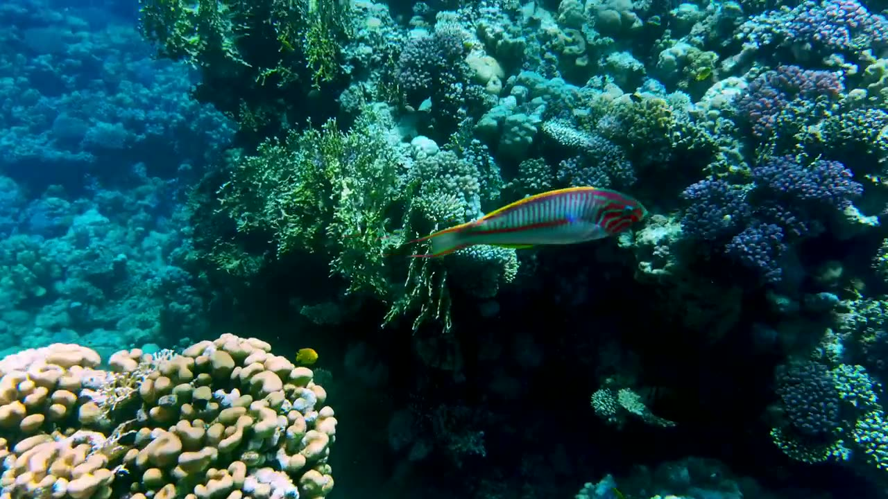
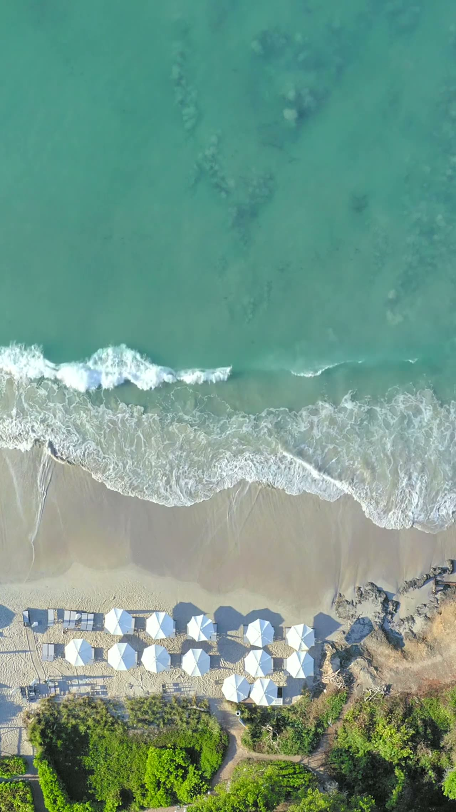
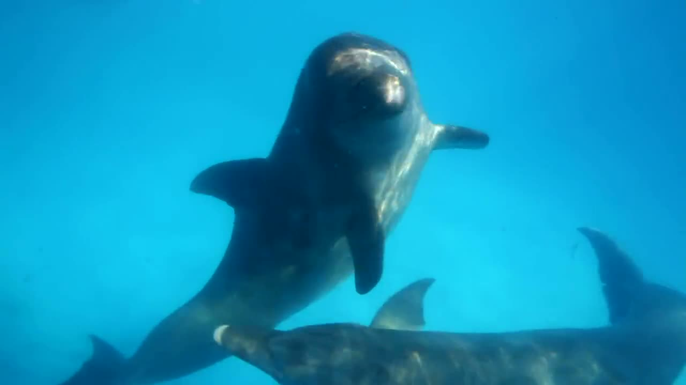
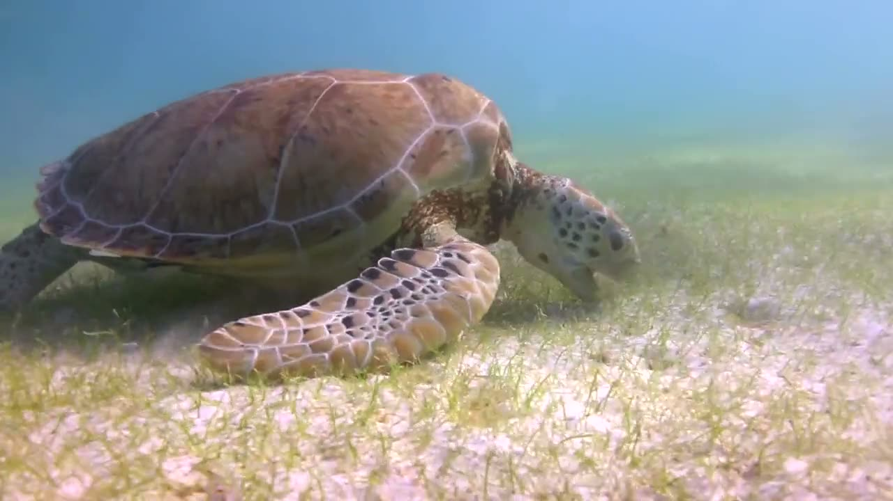
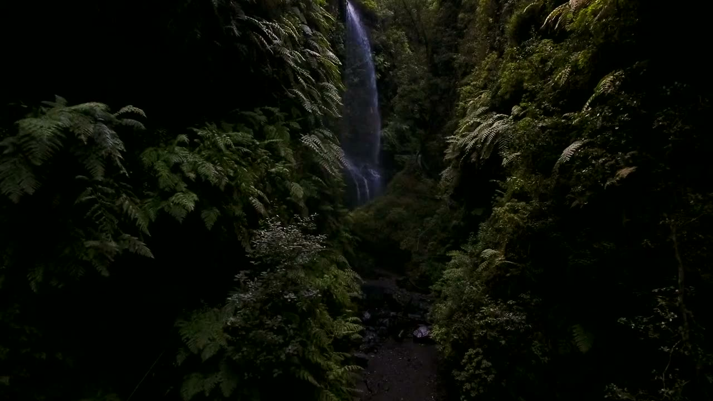
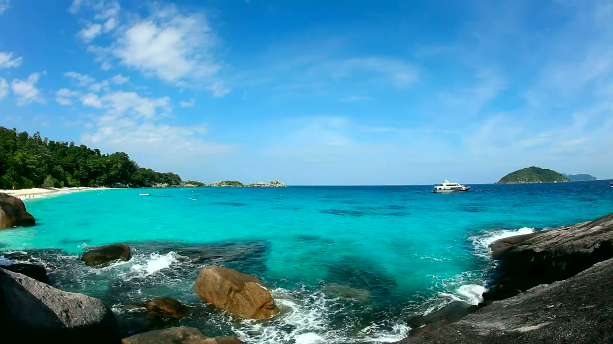
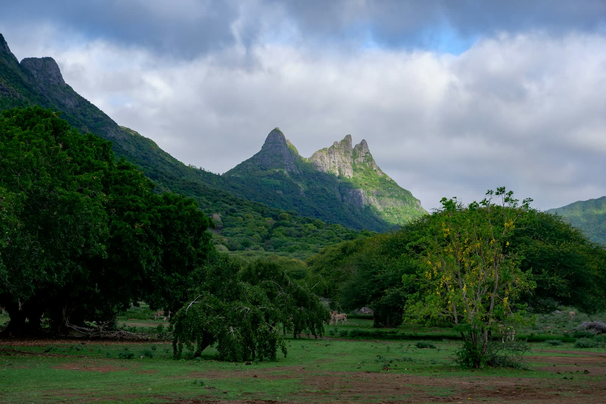
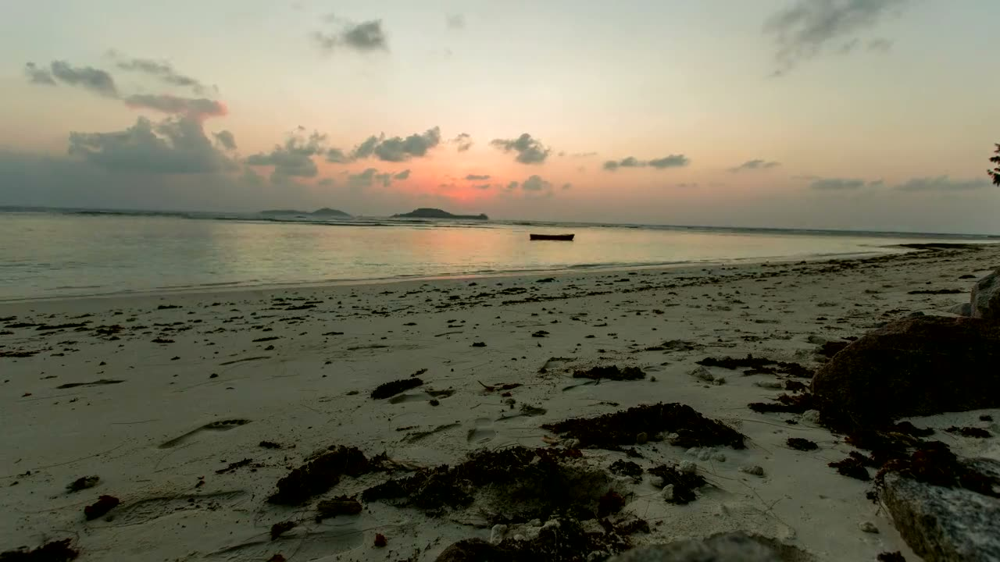
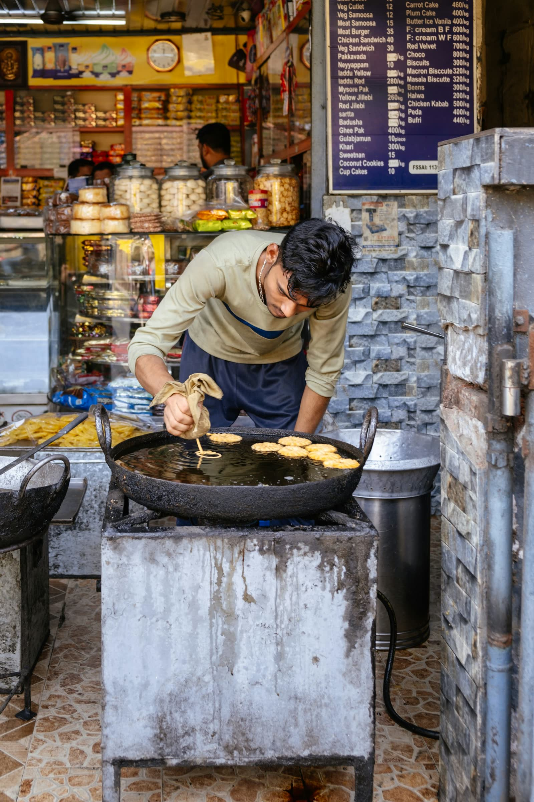

WaterSnorkel Blue Bay Marine Park
Float over coral gardens and tropical fish in a protected lagoon, straight from the beach or on a glass-bottom boat.
Pick a mood: get in the water, head for the hills, or eat your way around the island. Every experience here works as a half-day or day trip.

WaterFloat over coral gardens and tropical fish in a protected lagoon, straight from the beach or on a glass-bottom boat.

WaterSail across the east-coast lagoon, swim off the boat, and spend the afternoon on the island's white sand.

WaterHead out early to spot wild dolphins along the west coast. Choose an operator that keeps its distance from the animals.

WaterBeyond the lagoon, the reef drops into deeper water with turtles, rays and big schools of fish. Courses suit beginners.
 Nature
NatureA steep morning hike to the summit, with sweeping views over the lagoon and the famous "underwater waterfall" reef.
 Nature
NatureSee the Seven Coloured Earth dunes and the tall Chamarel waterfall in one easy trip through the hills.

NatureWalk through native forest in the national park, looking out for endemic birds and long views down the gorge.

NatureDrive the southern coast road to see waves hitting the cliffs where the reef disappears. No swimming here!
 Culture
CultureWander the central market for spices and street food, then visit Aapravasi Ghat and the Caudan Waterfront.

CultureVisit the sacred crater lake of Ganga Talao in the hills. Dress respectfully and remove your shoes at temples.

CultureSega is the island's traditional music and dance, played on drums like the ravanne. Many hotels and beach bars host evenings.

FoodFollow the queues for dholl puri, gâteaux piments and fresh fruit with chilli salt. Cheap, fast and delicious.
Mauritian food mixes Indian, Creole, Chinese and French influences, often on the same plate.
Soft flatbread filled with ground yellow split peas, wrapped around curry, pickles and chutney.
Little crispy chilli fritters made from split peas, eaten hot from the paper bag.
A rich Creole tomato sauce with garlic, thyme and chilli, cooked with sausages, fish or octopus.
Wok-fried noodles with vegetables and meat or seafood, a much-loved Sino-Mauritian staple.
A sweet, chilled milk drink with basil seeds and jelly, perfect on a hot afternoon.